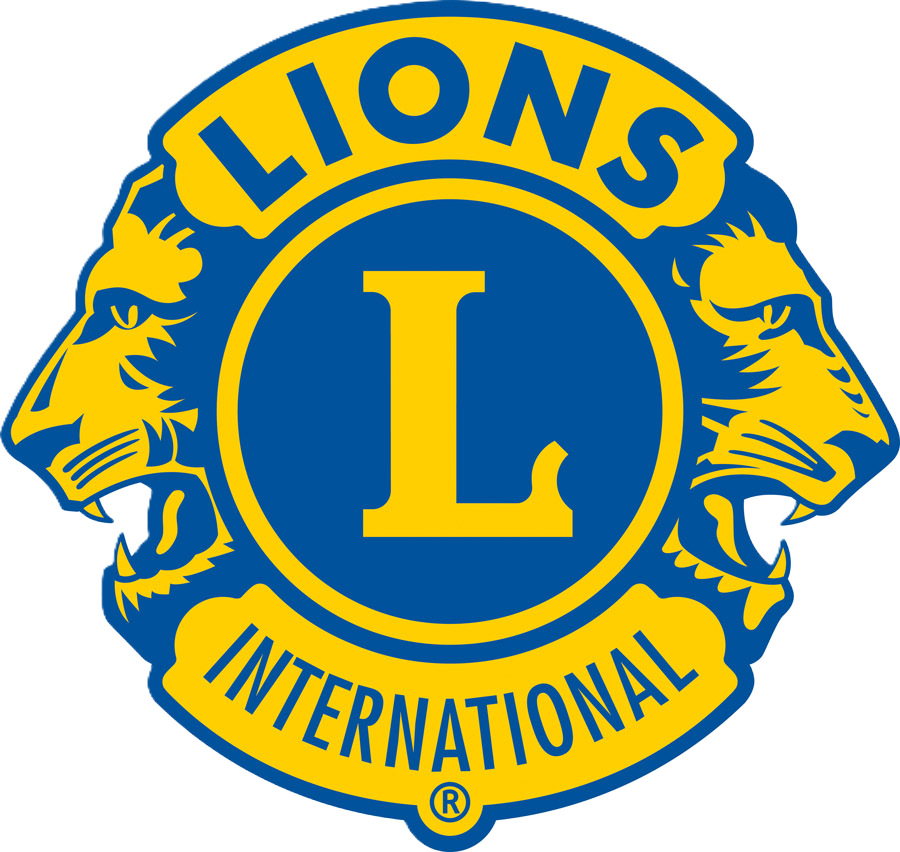

Leonardo Lazzaretti
Studente Ingegneria Meccanica del Veicolo | Perito Meccano-plastico | Docente STEM

Studente Ingegneria Meccanica del Veicolo | Perito Meccano-plastico | Docente STEM
Studente al 3° anno di Ingegneria Meccanica del Veicolo presso UNIMORE, diplomato con 100/100 come perito meccano-plastico presso ITS Luigi Einaudi. Attualmente docente STEM in Sistemi e Automazioni Industriali presso lo stesso ITS, con esperienza consolidata in progettazione CAD (Solidworks), robotica industriale (patentino COMAU) e gestione di progetti tecnici. Rappresentante d'Istituto per 2 anni e project leader del team vincitore della First Lego League Italia a livello interregionale. Volontario Croce Rossa Italiana e socio Lions Club International, dove coltivo leadership etica, servizio alla comunità e collaborazione in contesti associativi strutturati.
Consolidata attraverso docenza, tutoraggio, orientamento in entrata e attività di rappresentanza studentesca. Capacità di adattare il linguaggio tecnico a diversi pubblici.
Maturata in contesti reali: gestione problematiche come Rappresentante d'Istituto, risoluzione sfide tecniche in PCTO aziendale e durante progetti di progettazione meccanica.
Esperienza come project leader First Lego League (1° posto), Rappresentante d'Istituto, coordinamento gruppi studenti e gestione autonoma di classi durante la docenza.
Rafforzata tramite volontariato in Croce Rossa Italiana e partecipazione attiva al Lions Club International, con attenzione all’ascolto delle persone, al servizio alla comunità e al rispetto di contesti e sensibilità diversi.
Capacità di rispettare tempistiche anche con più attività parallele: studio universitario, docenza STEM, progetti extra-curriculari e volontariato.
Elevata attitudine ad adattarsi a cambiamenti e nuove situazioni, dimostrata nel passaggio tra ruoli diversi (studente, docente, volontario) e contesti lavorativi variabili.
Solidworks 3D avanzato (modellazione, assiemi, messe in tavola), AutoCAD base, esame di Modellazione CAD UNIMORE, progettazione di componenti meccanici e supporti strutturali.
Certificazione COMAU per uso e programmazione robot industriali, basi di CNC e sistemi automatici, esperienza di docenza in Sistemi e Automazioni Industriali.
Scienza e tecnologia dei materiali polimerici, stampaggio ad iniezione, estrusione di granuli plastici, parametri di processo e difettologia di base.
Utilizzo di calibro e micrometro, prove di urto, densità e durezza, controllo qualità su granuli plastici per produzione industriale.
Progettazione e conduzione di lezioni STEM, gestione classe, tutoraggio individuale e di gruppo (Solidworks, Fisica, Matematica, Disegno Tecnico).
Uso di Word, Excel e PowerPoint per documentazione tecnica, report di laboratorio, presentazioni per studenti e attività di orientamento.
Pianificazione attività e tempistiche per progetti scolastici e FLL, coordinamento di team studenti, rispetto scadenze e obiettivi.
Presentazioni tecniche per orientamento in entrata, spiegazione di concetti complessi a studenti delle superiori, collaborazione con docenti e azienda.
Clicca sulle card per aprire il dettaglio di ogni progetto.
Project leader del team vincitore a livello interregionale: progettazione e programmazione del robot Lego, strategia di gara e coordinamento del gruppo studenti durante tutte le missioni.
Certificazione di uso e programmazione robot industriali COMAU: impostazione di movimenti, traiettorie e logica di programma con attenzione alla sicurezza in cella.
Due anni di docenza STEM: Sistemi e Automazioni Industriali, corsi PNRR Solidworks 3D, recuperi di Fisica e ruolo di docente interno alla Maturità 2025 in Meccanica. Orientamento in Entrata "OpenDay".
Progetto di tutoraggio (30 ore) per preparazione team studenti alla competizione FLL Italia 2026. Supporto tecnico nella programmazione robot, strategia di gara e gestione dinamiche di gruppo.
Progetto scolastico completo: studio requisiti funzionali, modellazione 3D in Solidworks, rispetto di specifiche di carico e geometria, documentazione tecnica dettagliata.
Ottobre 2024 - Luglio 2025
Ottobre 2025 - Presente
ITS Luigi Einaudi, Correggio (RE). Contratto part-time 9 ore settimanali per le classi 3°, 4° e 5° meccanici, con gestione autonoma di lezioni, verifiche e coordinamento con il consiglio di classe. Esperienza continuativa su due anni scolastici consecutivi (2024/25 e 2025/26).
Attività principali:
📋 Commissario Interno Esame di Stato 2025 - Meccanica
Membro della commissione d'esame per la Maturità 2025 (classe 5amp), con responsabilità nella valutazione delle prove scritte e orali di Meccanica e partecipazione alle decisioni collegiali sui voti finali.
💻 Docente Corsi Pomeridiani Solidworks 3D (40 ore)
Conduzione di 2 corsi extra-curriculari di Solidworks 3D per studenti 3amp, 4amp e 5amp, focalizzati su modellazione di componenti, assiemi e tavole tecniche orientate al mondo produttivo.
⚛️ Docente Corsi di Recupero Fisica (10 ore)
Supporto mirato a studenti degli indirizzi meccanico e informatico su cinematica, dinamica e statica, con esercizi guidati e metodo di studio pratico per colmare le principali lacune.
🤖 Tutor Progetto First Lego League Italia 2026 (30 ore)
Tutoraggio del team studenti per la FLL Italia 2026: programmazione robot Lego Mindstorms, definizione strategie di gara e preparazione della presentazione del progetto scientifico.
🧭 Tutor Orientamento in Entrata
Coinvolgimento nelle attività di orientamento per studenti di terza media e famiglie, con conduzione di laboratori pomeridiani nei locali tecnici dell’istituto e presentazioni durante gli Open Day. Spiegazione del corso meccatronico, dei progetti svolti e degli sbocchi futuri, accompagnando i visitatori in un tour guidato della scuola e adattando il linguaggio tecnico a pubblici non specialisti.
2025 - Presente
Partecipazione attiva a iniziative di servizio alla comunità, progetti sociali e raccolte fondi in ambito Lions. Esperienza che rafforza valori di leadership etica, responsabilità verso il territorio e collaborazione con professionisti di età e background differenti.
2022 - Presente (3° anno)
UNIMORE, sede Modena. Percorso focalizzato su progettazione, meccanica applicata e modellazione CAD, con esame di Modellazione CAD superato e solide basi teorico-pratiche per la progettazione meccanica.
2022
Corso intensivo di uso e programmazione robot industriali COMAU presso ITS Luigi Einaudi. Attività svolta su robot reali con esercizi di movimentazione, gestione traiettorie, logica di programmazione e sicurezza in cella robotizzata. Certificazione conseguita a fine percorso con prova pratica e teorica.
2021
Nevicolor Srl (RE). Attività in reparto produttivo: controllo qualità su granuli plastici da estrusione (prove densità, colore, difettologia visiva), supporto allo stampaggio ad iniezione e monitoraggio delle scadenze d’ordine a supporto del team logistico.
2021 - Presente (attività continuativa)
Gestione operativa dei terreni agricoli di famiglia: manutenzione stagionale, cura delle colture e supporto alle fasi di raccolta. Attività che ha sviluppato senso di responsabilità, problem solving pratico, lavoro manuale e autonomia nella gestione di macchinari e piccole emergenze sul campo.
2017 - 2022
Votazione finale: 100/100.
Specializzazione in materie plastiche e materiali polimerici.
Rappresentante d'Istituto per 2 anni consecutivi.
Project Leader del team First Lego League Italia (1° posto interregionale).
Reggio Emilia